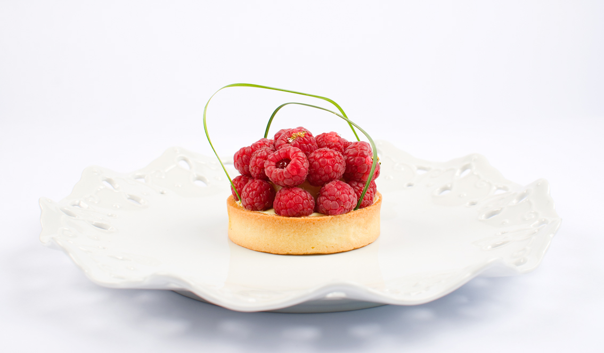
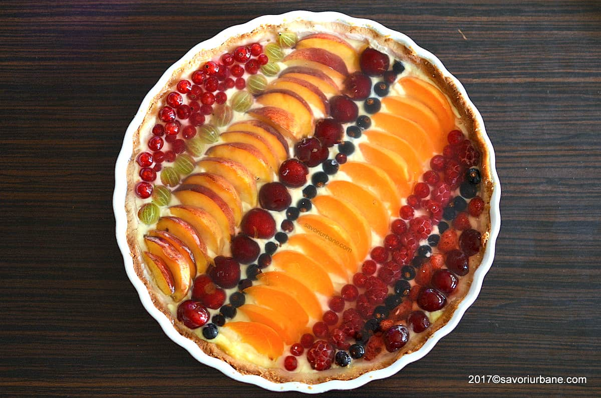

Most tarts these days are on the sweet side, such as lemon meringue tarts and Portuguese egg tarts. However, some types of savory tarts like the quiche are also commonly found in bakeries and cafes. Enjoying some store-bought tarts is one of life's simple pleasures, but the thought of trying to bake a tart yourself might seem like a daunting task, especially if you’ve only tried making cookies and brownies.Hundreds of tart varieties exist around the world. They can be sweet or savoury, and they also vary in size and filling. Here are some of the most common types of tarts, classified based on their fillings. Although their fillings vary, these tarts have something in common. Most tart crusts are made using shortcrust pastry, where the amount of fat is half the flour used in the recipe.
 